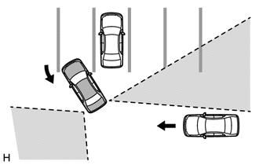
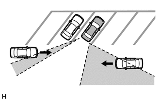
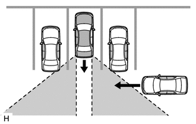
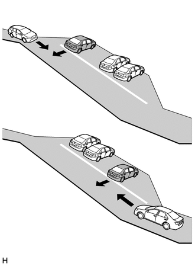
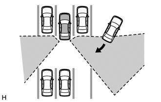

| Last Modified: 12-09-2025 | 6.11:8.1.0 | Doc ID: RM100000002GQSH |
| Model Year Start: 2024 | Model: Tacoma | Prod Date Range: [12/2023 - ] |
| Title: PARK ASSIST / MONITORING: PARKING SUPPORT BRAKE SYSTEM: PRECAUTION; 2024 - 2026 MY Tacoma Tacoma HV [12/2023 - ] | ||
PRECAUTION
PRECAUTIONS WHEN REPLACING CLEARANCE WARING ECU ASSEMBLY
NOTICE:
When the clearance warning ECU assembly is replaced, update the ECU security key.
Click here
![2024 - 2026 MY Tacoma Tacoma HV [12/2023 - ]; SETUP: WHEN REPLACING OR REMOVING/INSTALLING PARTS: UPDATE ECU SECURITY KEY](../../../../stylegraphics/info.gif)
PRECAUTION FOR DISCONNECTING CABLE FROM NEGATIVE AUXILIARY BATTERY TERMINAL
NOTICE:
After the ignition switch is turned off, there may be a waiting time before disconnecting the negative (-) auxiliary battery terminal.
Click here
HINT:
When disconnecting and reconnecting the auxiliary battery, there is an automatic learning function that completes learning when the respective system is used.
Click here
PRECAUTION FOR SERVICING VEHICLE
(a) After ECUs or parts are removed and installed, or replaced during inspection or servicing the vehicle, it is necessary to perform certain procedures (adjustment, calibration, initialization or registration).
Click here
PRECAUTION FOR TROUBLESHOOTING
(a) When a terminal contact is loose or damaged or a part is improperly installed, the system may only temporarily return to normal if the part is removed and installed without thorough diagnosis and repair.
(b) In order to assist with diagnosis, check and make a note of related information such as DTCs and Freeze Frame Data before disconnecting any connectors or removing and installing parts.
(c) Since the system may be influenced by malfunctions in systems other than the parking support brake system, be sure to check for any past and present DTCs in other systems.
HANDLING PRECAUTIONS FOR ECU OR SENSOR
(a) Unless specified by the inspection procedure, make sure that the ignition switch off when removing or installing each ECU or ultrasonic sensor.
(b) After removing and installing each ECU or ultrasonic sensor and all parts have been installed, check and ensure that no DTCs are output.
HANDLING PRECAUTIONS FOR PARKING SUPPORT BRAKE SYSTEM
(a) Make sure to observe the following points when using the parking support brake system.
(1) Do not rely solely upon the parking support brake system. Relying solely upon the parking support brake system may lead to an unexpected accident.
- Driving safely is the sole responsibility of the driver. Pay careful attention to the surrounding conditions in order to ensure safe driving. The parking support brake function can provide support to lessen the severity of collisions. However, it may not operate depending on the situation.
- The parking support brake system is not a system to stop the vehicle completely. If the vehicle is stopped by the parking support brake system, brake control by the parking support brake system will be canceled after approximately 2 seconds. Depress the brake pedal immediately after the parking support brake system operates.
(2) For the parking support brake system to operate correctly, make sure to observe the following points for the ultrasonic sensors. If not, the ultrasonic sensors may not operate correctly, resulting a serious injury.
- Do not modify, disassemble or paint an ultrasonic sensor.
- When replacing an ultrasonic sensor, only use LEXUS genuine parts.
- Do not subject an ultrasonic sensor or the area around an ultrasonic sensor to any impact.
- Do not damage an ultrasonic sensor. Always keep the ultrasonic sensors clean.
(3) Adhere to the following precautions for the blind spot monitor sensor to ensure that the system operates normally. If the blind spot monitor sensor does not operate normally, it may lead to an unforeseen accident, which is dangerous.
- Keep the blind spot monitor sensors and the surrounding areas on the rear bumper clean at all times.
-
Do not subject a blind spot monitor sensor or its surrounding area on the rear bumper to a strong impact. If a blind spot monitor sensor is moved even slightly off position, the system may malfunction and vehicles may not be detected correctly. In the following situations, inspect the blind spot monitor sensor and surrounding area.
- A blind spot monitor sensor or its surrounding area is subject to a strong impact.
- If the surrounding area of a blind spot monitor sensor is scratched or dented, or part of them has become disconnected.
- Do not disassemble the blind spot monitor sensor.
- Do not install accessories in the blind spot monitor sensors and the rear bumper near the blind spot monitor sensors and apply any sticker (including a transparent one) and aluminum tape.
- Do not modify the blind spot monitor sensor or surrounding area on the rear bumper.
- Do not paint the rear bumper any color other than an official LEXUS color.
- Do not drop a blind spot monitor sensor or subject it to a strong impact, as it is a high-precision device.
- Do not reuse a blind spot monitor sensor that has been dropped or subjected to a strong impact.
(4) Do not modify the suspension, as changes to the height or incline of the vehicle may prevent the ultrasonic sensors from correctly detecting obstacles. This may cause the system to fail to operate or to operate incorrectly.
(5) If the area around an ultrasonic sensor is subjected to an impact, equipment may not operate properly due to an ultrasonic sensor malfunction.
(6) When washing the vehicle with a high-pressure washer, do not spray water on the ultrasonic sensors or surrounding areas. High-pressure water can damage the ultrasonic sensors.
(7) When using steam to wash the vehicle, do not apply steam too close to the ultrasonic sensors. They may not function properly if subjected to steam.
PRECAUTIONS FOR PARKING SUPPORT BRAKE FUNCTION
(a) In the following situations, the parking support brake system may not operate correctly.
(1) Environmental influence
- There is an object that prevents correct detection of an obstruction between the ultrasonic sensor and the obstruction.
- An object such as a motorcycle, bicycle or pedestrian crosses in front of the vehicle.
(2) Influence from the weather
- When the vehicle is operated under the hot sun or in a freezing climate.
- When foreign matter such as ice, snow or mud is attached to an ultrasonic sensor. If the ultrasonic sensor is cleaned, the system will return to normal.
- It is raining heavily or the sensor is sprayed with water.
- The wind is strong.
- In severe weather such as fog, snow or a sandstorm.
(3) Influence from other ultrasonic waves
- When ultrasonic waves are received from the horn or parking sonar system of another vehicle, a motorcycle engine, or the air brakes of a large vehicle.
- Electronic components such as a backlit license plate (especially fluorescent types), fog lights, a fender pole or a wireless antenna are installed near an ultrasonic sensor.
(4) Changes in the vehicle
- The vehicle is tilted at a steep angle.
- The height of the vehicle has drastically changed due to loading (the nose tilts up or down).
- When the ultrasonic sensors become misaligned due to removal and installation or a collision, etc.
- When the tire diameter is not correct for the vehicle, the suspension has been modified, etc.
(5) Regarding detection of stationary objects in the side area (w/ Advanced Park System)
- Objects along the sides of the vehicle are not instantaneously detected. The location of objects in relation to the vehicle is estimated after they are first detected by the front or rear side sensors. Therefore, after turning the ignition switch to ON (IG), even if a stationary object is along the side of the vehicle, it may not be detected until the vehicle has been driven a small amount and the side sensors completely scan the areas along the sides of the vehicle.
- When the outer rear view mirror assemblies are retracted, objects cannot be detected.
- Retract and return the outer rear view mirror assemblies after the auxiliary battery is removed and installed or discharged.
(6) Other
- When driving in shift position N
(b) The sensors cannot detect the following objects:
- Objects that absorb ultrasonic waves such as people (especially people wearing certain types of clothing), cotton or snow.
- Objects that are not perpendicular to the path of the vehicle, or are angled away from the ultrasonic sensors, or objects with uneven surfaces.
- Short objects
- Thin objects such as wire, rope or a post.
- Objects that are extremely close to a bumper.
- Objects that are tall and protrude toward the vehicle above the detection range of the sensors.
PRECAUTIONS FOR REAR CROSS TRAFFIC AUTO BRAKE FUNCTION
(a) The rear cross traffic auto brake function does not detect the following objects and vehicles:
- *: These objects may be detected depending on the situation.
(1) Stationary objects.
(2) Vehicles moving away from this vehicle
(3) Moving objects other than passenger vehicles such as pedestrians, motorcycles or bicycles
(4) Objects extremely close to the blind spot monitor sensors
(5) The speed of a vehicle approaching the right or left at the rear of the vehicle is less than 8 km/h (5 mph).
(6) The speed of a vehicle approaching the right or left at the rear of the vehicle is more than 24 km/h (15 mph).
(7) The distance between the radar sensor and an approaching object is too close.
(b) The rear cross traffic auto brake function may not be able to detect objects in the following situations:
(1) When the vehicle is parked in a very hot or cold environment.
(2) When foreign matter such as snow, ice or mud is attached to the rear bumper.
(3) During heavy rain or when water is splashing on the vehicle.
(4) When an approaching vehicle is blocked from a blind spot monitor sensor by an adjacent vehicle.
(5) When the vehicle is significantly tilted.
(6) When the vehicle is being towed.
(7) When the vehicle is equipped with lowered suspension or tires with a diameter different to that of the original.
(8) When the height of the vehicle has drastically changed (the nose is tilted up or down).
(9) When electronic components such as a backlit license plate, fog lights, a fender pole, wireless antenna or stickers are installed near the sensors.
(10) When a blind spot monitor sensor is misaligned.
(11) When several vehicles are approaching with little space between them.
(12) When a vehicle is approaching at high speed.
(c) The rear cross traffic auto brake function may not detect
(1) When a vehicle is approaching from behind.
(2) When the vehicle is parked at a shallow angle.
(3) When either of the blind spot monitor sensors is blocked such as by an adjacent vehicle.
(4) When the vehicle is parked on a steep hill with varying gradients.
(5) When a vehicle turns in close proximity to the vehicle
SENSOR EXPRESSIONS
(a) The descriptions for the blind spot monitor sensors differ depending on the system. The expressions listed in the table below are used in this Repair Manual.
|
Part Name |
Actual Part Name |
|---|---|
|
Blind spot monitor sensor (B) |
Blind spot monitor sensor RH |
|
Blind spot monitor sensor (A) |
Blind spot monitor sensor LH |
|
|
|